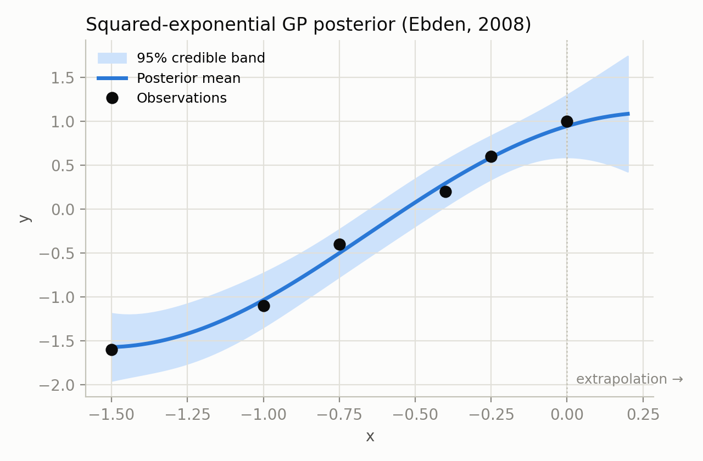
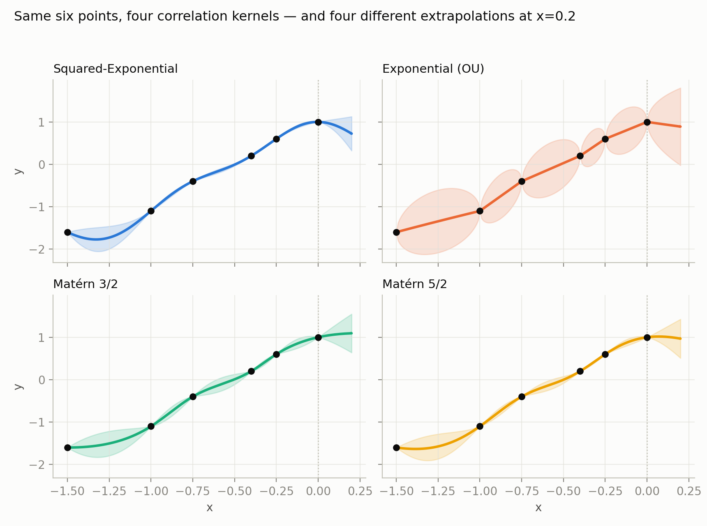

How a handful of (noisy) points becomes a predictive distribution, and how that distribution becomes a strategy for finding
Every engineering design loop hides the same villain: a simulation that is
accurate but slow. A CFD run on a wing can take eight hours on 64 cores; a
crash simulation, longer still. Gradient-based optimizers want hundreds of
such calls, uncertainty quantification wants thousands, and design-space
exploration wants more still
This article builds that idea from scratch and ends where a lot of real design optimization currently lives: Bayesian Optimization — using a Gaussian Process not just to predict, but to decide where to sample next under a tight budget. Every figure below is generated by the same code as the source notebooks (linked throughout), and the two boxed panels are fully interactive — drag points, change kernels, click to sample a "black box," and watch the algorithm choose its next move.
The idea has two independent histories that turned out to be the same idea. In 1951,
mining engineer Daniel Krige proposed a statistical method for estimating gold
concentration between boreholes on the Witwatersrand
Here is the problem a GP solves, verbatim from the running example in this article
(adapted from Ebden's 2008 tutorial GP_tutorial.ipynb): given six noisy observations

GP_tutorial.ipynb.
Notice the band widens past
A Gaussian Process is a distribution over functions such that any finite
collection of function values is jointly Gaussian. It is fully specified by a mean
function (we take it to be zero, after centering the data) and a covariance — or
kernel — function
with three hyperparameters: the length-scale
Conditioning a joint Gaussian on part of itself is elementary — it is the same
"Schur complement" trick used for regression coefficients in linear-Gaussian models —
and it gives closed-form expressions for the posterior mean and variance at any
That is the entire algorithm: build two small matrices, invert one of them (in
practice, via a Cholesky factorization for numerical stability —
plt.imshow(covXXs) and
plt.imshow(covXX_noisy) cells, live — watch the Gram matrix reorganize as you
drag points around (nearby points in L.T @ np.random.randn(N, 5) cell.
The kernel is a modeling choice, not a fact about the data, and different kernels
extrapolate very differently from the same six points. GP_tutorial_2.ipynb
compares four options available in SMT's KRG surrogate

Hyperparameters are not chosen by eye in practice — they are fit by maximizing the log marginal likelihood, a sum of three interpretable terms: how well the model explains the data, a complexity penalty, and a normalization constant:
In GP_tutorial.ipynb this is maximized with COBYLA; SMT and EGObox use
similar gradient-free or gradient-based routines under the hood. As the number of
design variables
This is also where the toolbox matters. SMT —
the Surrogate Modeling Toolbox GP_tutorial_2.ipynb
(pip install smt), built and maintained by the ONERA / ISAE-SUPAERO / University
of Michigan / Polytechnique Montréal group behind several of the methods in this article.
It wraps kriging, mixed-variable kernels, and gradient-enhanced kriging behind one
consistent set_training_values / train / predict_values
API — the same shape of API you will see again below for EGObox's Rust-based Gpx.
Nothing above required GP_tutorial_2.ipynb's
last example fits the exact same Squared-Exponential kriging model to a genuinely 2-D
input — longitude/latitude — using ten French weather stations' average temperatures, and
interpolates (with uncertainty) across the whole country. Two-dimensional or not, it is
the identical closed-form posterior from Part 1; only the distance
The first two tutorials build a GP by hand and then via SMT in pure Python. The natural
third step — and the one requested for this article — is
EGObox's Gpx surrogate
pip install egobox), built by the same SMT/SEGOMOE team for
speed on larger design-of-experiments. Its
Gpx_Tutorial.ipynb
walks through four examples that map neatly onto everything above, plus two ideas that
only appear once you leave toy 1-D problems.
The basic fit-and-predict loop is deliberately close to what you have already seen:
import egobox as egx
import numpy as np
xt = np.array([0.0, 1.0, 2.0, 3.0, 4.0]).T
yt = np.array([0.0, 1.0, 1.5, 0.9, 1.0])
gpx = egx.Gpx.builder().fit(xt, yt)
y = gpx.predict(x) # posterior mean
s2 = gpx.predict_var(x) # posterior variance
Two features go beyond GP_tutorial.ipynb and GP_tutorial_2.ipynb in ways
that matter for real engineering models:
Mixture-of-experts clustering. A single stationary kernel struggles with
functions that behave very differently across the input space (a piecewise function, a
regime change, a shock). Gpx.builder(n_clusters=3) fits several local GP
"experts" and blends them smoothly — this is precisely the MOE (Mixture
Of Experts) half of SEGOMOE, the constrained global optimizer covered in
Part 5, and traces back to the same idea used to combine surrogate models for
aerodynamic performance prediction
Mixed continuous / discrete design variables. Real design variables are
rarely all continuous — think optimizer choice, material grade, or an integer count of
stiffeners. Gpx accepts a per-variable XSpec:
xspecs = [
egx.XSpec(egx.XType.ORD, [1, 2, 3]), # ordered discrete
egx.XSpec(egx.XType.ENUM, tags=["blue", "red", "green"]), # categorical
egx.XSpec(egx.XType.INT, [5.0, 10.0]), # integer range
egx.XSpec(egx.XType.FLOAT,[0.0, 1.0]), # continuous
]
which is the practical, code-level version of the mixed-categorical correlation kernel
developed for exactly this purpose
This is not a purely academic exercise: multi-output GPs from the same research line
have been used to fuse a faulty flight-test sensor with a healthy correlated one
Everything so far answers "what do I think
One instinct is error-based exploration: repeatedly sample where the
GP's variance is highest, to build the most accurate surrogate everywhere. That is a
reasonable strategy if your goal really is a globally accurate surrogate (for
certification, for a reduced-order model you will reuse many times). But if your goal is
only the minimizer
Define the improvement over the current best observed value
Because the GP posterior at any
Probability of Improvement chases any improvement, however small — it tends to cluster samples tightly around the current best point. Expected Improvement additionally weighs how much improvement is plausible, so it naturally balances exploring wide, uncertain regions against exploiting a promising neighborhood; it is the default in almost every modern BO library, from scikit-optimize to BoTorch to SEGOMOE.
The full loop — fit a GP, maximize the acquisition function to pick the next point,
evaluate the true (expensive) function there, repeat — is Efficient Global Optimization.
Try it below on the exact same benchmark used to illustrate this loop in the companion
slide deck
Two things are worth noticing once you've played with it for a minute. First, EGO typically needs only a handful of iterations — the slide-deck example converges in about six enrichment iterations from a 4-point initial DOE, versus dozens to hundreds of calls a generic gradient-based or evolutionary optimizer would need on a black box with no derivatives. Second, the acquisition function is itself multimodal and cheap to evaluate, so maximizing it (with, say, a multi-start gradient method or a global optimizer) costs essentially nothing compared to the true, expensive objective — that asymmetry is the entire point of the method.
Engineering optimization is rarely unconstrained. A wing shape optimization needs
The right-hand problem is itself multimodal and needs a global solver, but it is nearly free to evaluate compared to the original simulation — the trade at the heart of every surrogate-assisted method.
On a simplified version of the ADODG Case 4 aerodynamic shape optimization benchmark
(minimizing drag coefficient of the NASA Common Research Model wing over 8 twist
variables, subject to fixed lift), SEGOMOE reaches essentially the same optimum as the
gradient-based optimizer SNOPT —
The same "surrogate for objective and constraints, mixture of experts underneath" recipe
extends naturally to mixed-variable design spaces (continuous, integer, ordered, and
categorical variables together — one-hot encoding the categorical dimensions, or using
the mixed-categorical kernel directly Gpx's XSpec from Part 3 was built for. If you want the
optimizer side of that same story in code, EGObox's
Egor_Tutorial.ipynb
runs the identical continuous → mixed-integer progression through its Egor
optimizer, including an "ask-and-tell" interface for when you need to stay in control of
the evaluation loop yourself (e.g. because your "simulation" is a physical experiment).
Building a surrogate is not free: generating
and the surrogate wins once
This is exactly why Bayesian Optimization is a different regime from "train an accurate
surrogate, then optimize on it": in BO, the initial DOE
The arc of this article mirrors the three notebooks it is built from: hand-derive a GP
posterior from a squared-exponential kernel and a handful of points
(GP_tutorial.ipynb); compare kernels and see how extrapolation and
hyperparameter fitting actually work in a production toolbox, SMT
(GP_tutorial_2.ipynb); scale up to mixture-of-experts and mixed-variable
GPs in a modern, fast implementation, EGObox's Gpx
(Gpx_Tutorial.ipynb); and finally turn that surrogate from a predictor into
a decision-maker with acquisition functions, arriving at SEGOMOE — a constrained,
mixed-variable Bayesian optimizer already validated on real aerodynamic shape design.
The two interactive panels above are meant to make the difference between those last two
steps — regression versus optimization — something you can feel by
dragging a point, not just read as a formula.
If you want to go further: SMT and EGObox are both open-source and actively developed by
the same ONERA/ISAE-SUPAERO group; scikit-learn's
gaussian_process module and scikit-optimize cover the same ground in pure
Python for smaller problems, and BoTorch (PyTorch) and Meta's Ax platform are the
GPU-scale alternatives for very large or batched Bayesian optimization.
This article is built directly from three notebooks and a workshop talk, all reproduced or linked in the repository:
GP_tutorial.ipynb — GP regression from scratch (SE kernel, Ebden 2008 example)GP_tutorial_2.ipynb — kernel comparison and extrapolation via SMT's KRGGpx_Tutorial.ipynb — "GP tutorial 3": trend/correlation customization, clustering, mixed variablesEgor_Tutorial.ipynb — the matching EGO/BO optimizer, continuous and mixed-integer
Built with the Distill template,
following the structure of Exploring
Bayesian Optimization
With thanks to N. Bartoli, T. Lefebvre, R. Lafage, P. Saves and Y. Diouane, co-authors of the underlying SMT / SEGOMOE / EGObox research this article draws on, and to the Distill template authors for an open, citable format built for exactly this kind of interactive explanation.